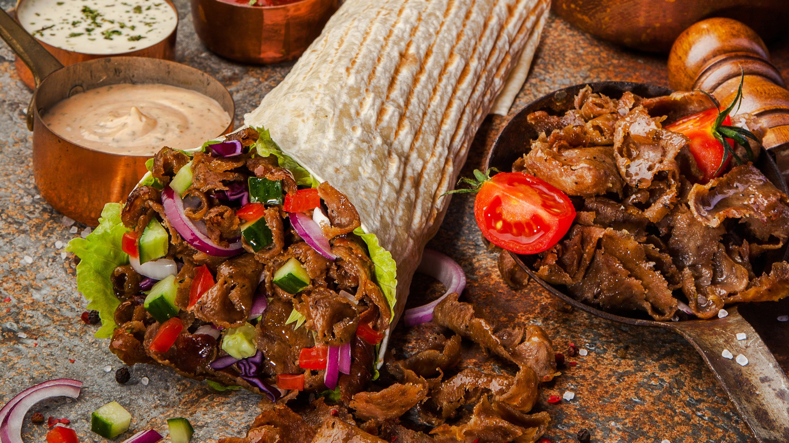

Berlińskie kebaby, znane z obfitości i wyjątkowego smaku, są prawdziwą ucztą dla podniebienia. Berlin, miasto o bogatej historii imigracji, stał się europejską stolicą kebabów, głównie dzięki tureckiej społeczności, która osiedliła się tam w drugiej połowie XX wieku.
Jednym z najbardziej znanych rodzajów kebaba w Berlinie jest doner kebab, którego stworzenie przypisywane jest Kadirowi Nurmanowi. W latach 70. Nurman wpadł na pomysł podania mięsa doner z sałatą, pomidorami i cebulą w bułce, tworząc jedzenie na wynos, które szybko zyskało popularność wśród berlińczyków i turystów.
Dziś berlińskie kebaby są nie tylko smaczne, ale także różnorodne. Można znaleźć wersje z kurczakiem, jagnięciną, wołowiną, a także opcje wegetariańskie i wegańskie, jak falafel czy halloumi. Do tego dochodzą różne sosy: klasyczny czosnkowy, ostry, jogurtowy, a także warianty inspirowane kuchnią międzynarodową.
Kebaby w Berlinie to jednak nie tylko jedzenie – to także symbol wielokulturowości miasta i jego otwartości na różne tradycje kulinarne. Spróbować ich można niemal na każdym rogu, a niektóre miejsca, jak Mustafa’s Gemüse Kebab, stały się legendarnymi punktami gastronomicznymi, przyciągającymi tłumy zarówno lokalnych mieszkańców, jak i turystów.
KAPADOKYA KEBAB
Kapadokya Kebab w Gliwicach to jedno z najlepszych miejsc w mieście, jeśli chodzi o szybkie i sycące dania typu kebab.
Lokal znajduje się przy ul. Wrocławskiej 4A i jest znany z szerokiego wyboru dań, obejmującego kebaby w bułce, w cieście, a także zestawy na talerzu.
Kapadokya oferuje zarówno klasyczne wersje z kurczakiem i wołowiną, jak i opcje wegetariańskie,
co czyni to miejsce idealnym dla różnych gustów i preferencji.
Menu:
Kebab w cieście z kurczakiem lub wołowiną – 20 zł, zawierający miksy świeżych warzyw i sos do wyboru.
Kebab na talerzu z frytkami i sałatką – 31 zł, idealny dla osób szukających bardziej sycącej opcji.
Kebab kubełek – 25 zł, który łączy w sobie frytki i mięso, będąc wygodnym rozwiązaniem do zabrania na wynos.
Opcje wegetariańskie, takie jak kebab z serem feta lub halloumi w tortilli, w cenach od 15 do 20 zł.
Atmosfera w lokalu jest przyjazna, a obsługa stara się zapewnić szybki i profesjonalny serwis.
Dzięki temu, Kapadokya Kebab zyskała uznanie wśród mieszkańców i turystów odwiedzających Gliwice.
Więcej informacji, pełne menu i możliwość zamówienia znajdziesz na stronie Kapadokya Kebab - Złóż zamówienie online